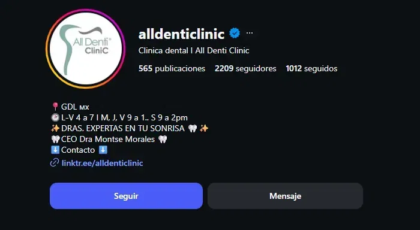

Dr. Gerardo Conde Dávalos, especialidades dentales. Un consultorio con autoridad real y resultados clínicos genuinos — que hoy vive únicamente del boca en boca.
Tus fotos de antes/después son reales y son buenas — pero están publicadas sin una sola línea de texto. Nadie que las ve entiende el caso, el proceso ni por qué confiar en ti.
Sin link en tu bio, sin WhatsApp directo, sin sitio propio. Alguien que llega a tu perfil interesado no tiene a dónde ir — y se pierde en el momento exacto en que estaba más cerca de agendar.
Tu 5.0 estrellas es un activo real. Pero el volumen es bajo frente a lo que puede acumular un consultorio con un flujo activo de solicitud de reseñas — y hoy eso pasa por casualidad, no por proceso.
@dental_condent, "Condent" y "Dr. Gerardo Conde D." conviven sin conectarse entre sí. Un paciente nuevo no sabe si te está buscando a ti o a una clínica — y eso resta confianza antes de la primera cita.
Hoy nadie puede verte hablar, explicar un tratamiento o transmitir calma antes de sentarse en tu sillón. Eso es justo lo que decide, en la cabeza de un paciente nuevo, entre agendar contigo o seguir buscando.
"No te digo esto para criticarte. Te lo digo porque ya sé exactamente cómo resolverlo."

Ese consultorio no tiene mejores resultados clínicos que los tuyos — tiene un sistema que convierte cada publicación en un paciente que sabe a dónde llegar. Con un flujo activo de contenido y un link funcionando, un consultorio de ese tamaño en Zapopan/GDL puede estar generando de forma estimada varias citas nuevas por semana solo desde redes, sin depender de que alguien te recomiende de voz.
No estás lejos. Estás a un sistema de distancia.
Cuatro categorías: Antes/Después, Preguntas frecuentes, Tratamientos, Cómo agendar — hoy tu perfil no tiene ninguna, y son lo primero que revisa un paciente nuevo antes de escribirte.
Gancho universal (el miedo al dentista, no la venta), desarrollo con tu antes/después real, cierre con tu voz. Sin mencionar "Condent" en los primeros tres segundos — así se retiene, no se ignora.
Un solo nombre visible en todos lados: perfil, reseñas, watermark de tus fotos. Esto no cuesta nada de tiempo tuyo, y es la base de todo lo demás.
Un texto corto para pedir reseña justo después de la cita, en el momento de mayor satisfacción del paciente — listo para que lo uses desde hoy.
Esto es lo que haría en tu caso en los primeros 30 días. Te lo doy sin compromiso.
Tienes la autoridad clínica y las reseñas que la respaldan. Lo que falta es la infraestructura que trabaje por ti aunque no estés frente a la pantalla — esta es la ruta de los próximos 90 días.
Identidad unificada, destacadas activas, WhatsApp como puerta de entrada, y contenido en video publicándose con regularidad usando tus propios casos.
Flujo activo de reseñas, respuesta a cada opinión en Google, y contenido que empieza a posicionarte a ti — no solo a la clínica — como referencia en Zapopan.
Con la base construida, empezamos a dirigir ese tráfico hacia los tratamientos de mayor valor que ya ofreces — ortodoncia, implantes — en lugar de depender solo de consultas generales.
Tu modelo de hoy — consultorio uno a uno — tiene un techo natural: solo puedes atender a las horas que tienes. Esto es lo que pasa cuando le sumas encima un sistema digital que no depende de tu tiempo.
Los números de abajo son un punto de partida, no una promesa — ajústenlos juntos conmigo en la llamada a lo que realmente factura hoy.
Un dentista con años de formación real, cédula y casos que respaldan su trabajo no debería ganar menos que alguien sin preparación que solo genera contenido superficial en redes.
Soy Shadow Operator: escalo negocios digitales trabajando detrás de escena para que la marca al frente sea la del experto, no la mía.
Me formé directamente con David Turu, donde participé en el lanzamiento de Paulattier como Gerente del CMO, y curso un diplomado con Mauricio Benoist en habilidades de altos ingresos y PNL aplicada a negocios.
Trabajo con un máximo de dos proyectos a la vez — busco a alguien que comparta visión de disciplina, consistencia y dirección. Sin presión, sin urgencia artificial.
Sin presión, sin números todavía — solo para entender a fondo hacia dónde quieres llevar Condent y ver si tiene sentido trabajar juntos.
Agendar llamada de diagnósticoTu trabajo ya genera 5.0 estrellas. Falta que el resto de Zapopan lo sepa.